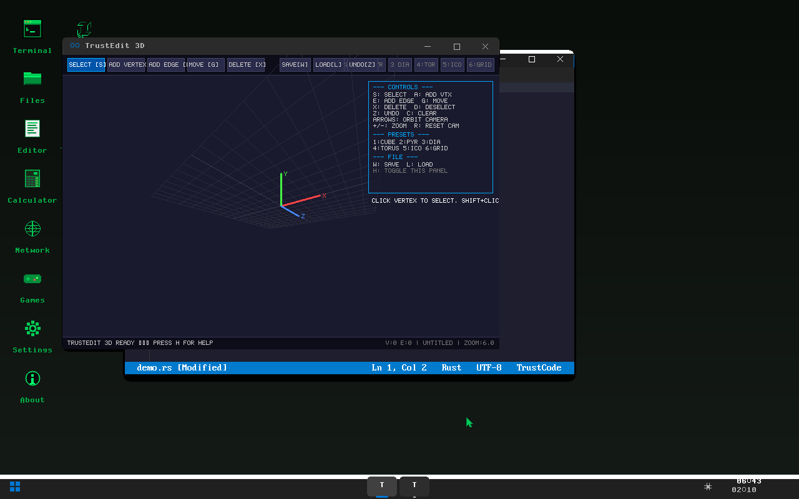

A bare-metal operating system with a 4.4-million-parameter AI transformer running in the kernel.
257,000 lines of pure Rust. Zero C. Built solo by one developer.

JARVIS — a 4.4-million-parameter transformer with 8 attention heads, 6 layers, and 512-dim embeddings — runs bare-metal in kernel space. On-device training via backpropagation with Adam optimizer. No cloud. No API. No ML framework.
TrustLang compiles programs to raw Intel machine code and executes them inside the kernel. Lexer → Parser → AST → native x86_64. No LLVM, no GCC. 3,555 lines, dual execution (bytecode VM + native).
PXE boot a blank machine → TrustOS installs itself → JARVIS wakes up → joins Raft-consensus mesh → starts federated learning with other nodes. Fully autonomous AI propagation over LAN.
COSMIC2 desktop environment with SIMD-accelerated compositing, 14+ apps, window manager, taskbar, dock. Browser with HTML/CSS/JS, Game Boy & NES emulators, 3D chess, code editor, audio synth.
TLS 1.3, TCP/IP, DNS, DHCP, HTTP/HTTPS, FAT32, EXT4, NVMe, AHCI, VirtIO, Ed25519 signatures, hypervisor (VT-x/AMD-V) — all written in pure Rust. Not a single line of C.
Boots on x86_64 PCs (UEFI + Legacy BIOS), ARM64 phones & tablets (Android fastboot, Raspberry Pi), and RISC-V boards — from one codebase.
| Feature | TrustOS | Linux | SerenityOS | Redox OS | TempleOS |
|---|---|---|---|---|---|
| Language | 100% Rust | C + Assembly | C++ | Rust | HolyC |
| AI in kernel | ✓ 4.4M transformer | ✗ | ✗ | ✗ | ✗ |
| Native compiler | ✓ x86_64 codegen | ✗ (userspace) | ✗ | ✗ | ✓ HolyC JIT |
| GUI desktop | ✓ 144 FPS | ✓ (X11/Wayland) | ✓ | ✓ Orbital | ✓ |
| Mesh AI networking | ✓ Raft + federated | ✗ | ✗ | ✗ | ✗ |
| Self-replicating (PXE) | ✓ | ✗ (manual) | ✗ | ✗ | ✗ |
| Multi-arch | ✓ x86_64 + ARM64 + RISC-V | ✓ | ✗ x86_64 only | ✓ | ✗ x86_64 only |
| TLS 1.3 from scratch | ✓ | ✗ (OpenSSL) | ✗ (LibTLS) | ✗ | ✗ |
| Solo developer | ✓ | ✗ (thousands) | ✓ (started solo) | ✗ (team) | ✓ |
Custom transformer: 8 attention heads, 6 layers, 512-dim embeddings, byte-level tokenizer (256 vocab). 4.4 million trainable weights in kernel memory.
On-device backpropagation with Adam optimizer. Runs bare-metal — no ML framework, no libc, no OS dependency. SIMD-accelerated (SSE2/AVX).
Nodes sync model weights across a Raft-consensus mesh network. Distributed training without any cloud infrastructure.
Hard-coded authorization protocol: JARVIS cannot modify OS code or weights without explicit permission from its guardians. Enforced at kernel level.
CPU: Any x86_64 (Pentium 4+, 2003)
RAM: 256 MB
Storage: 12 MB (ISO)
Display: 640×480 framebuffer
Boot: UEFI or Legacy BIOS
CPU: Intel i5+ / AMD Ryzen
RAM: 512 MB – 2 GB
Storage: USB 3.0 drive
Display: 1024×768+
Boot: UEFI 2.0+
ARM64: Android phones, Raspberry Pi
RISC-V: SiFive, StarFive boards
Virtual: QEMU, VirtualBox, KVM
Tested: ThinkPad T61 (2007)